@DomainService
public class BookKeeper {
public Invoice issue(Order order, TaxPolicy taxPolicy) {
//...
}
}Mikrousługi i wzorce architektury rozproszonej
Poznajmy się
O mnie
Jakub Marchwicki
programista od ponad 15 lat
po drodze: manager, dyrektor IT, architekt, konsultant
domeny: ubezpieczenia, bankowość, marketing, edukacja, rolnictwo
Twitter: @kubem
Microservices - teoria
Monolithic vs Micro

Monolithic vs Micro

Monolithic vs Micro

Monolithic vs Micro

Microservices
Micro Service is an architectural concept that aims to decouple a solution by decomposing functionality into discrete services with communication over lightweight mechanisms, often an HTTP API
Czym jest mikroserwis?
Niewielki problem biznesowy
Niezależny, wdrażany niezależnie
Działa we własnym procesie
Jest właścicielem swoich danych
Podstawy SOA i Integration Patterns
Integruje się explicite z użyciem powszechnych interfejsów
Nie jest statycznie linkowana (wywoływana w pamięci) jak biblioteki
While HTTP isn’t always the best answer, it’s a damn fine first guess
— Coda Hale
Technologia vs organizacja
W większości firm zespoły organizowane są wokół aspektów technicznych (ang. technical capabilities)
Zajmują się poszczególnymi warstwami aplikacji (frontend, backend, wdrożenia)
Warstwami organizacji projektu
Shared teams: zespół UI/UX, testerzy, backendowcy, frontendowcy
Podział organizacji implikuje procesy
Proces wprowadzania zmiany, budżetowania, akceptacji
Aby tego uniknąć zespół wszystkie zmiany stara się wprowadzić w systemach do których ma dostęp
Technologia vs organizacja

Conway’s Law
Any organization that designs a system (defined broadly) will produce a design whose structure is a copy of the organization’s communication structure.
— Melvyn Conway
Strict communication ⇒ String contracts (SOAP)
Communication problems ⇒ Adapters + Anti-corruption layers
Conway’s Law (2)
Conway’s Law … can be summarized as “Dysfunctional organizations tend to create dysfunctional applications.” To paraphrase Einstein, you can’t fix a problem from within the same mindset that created it, so it is often worth investigating whether restructuring your organization or team would prevent the new application from displaying all the same structural dysfunctions as the original. In what could be termed an “inverse Conway maneuver,” you may want to begin by breaking down silos that constrain the team’s ability to collaborate effectively.
ThoughtWorks
— Jonny Leroy and Matt Simons
— Jonny Leroy and Matt Simons
Conway’s Law (3)
organization which radically change their system design should expect changes in communication structure
— Inverse Conway's Law
Cross-functional

Praca projektowa
W świecie mikro usług szalenie ważna jest optyka produktowa nie projektowa
Projekt zakończył się z sukcesem, tzn. zakończył się o czasie, w budżecie i w założonym zakresie
Dla produktu może to nie mieć sensu
Dekompozycja produktu na projekty jest iluzoryczna
Zamiast patrzeć na rozwiązanie jako listę funkcjonalności - patrzymy na wartości które usługa daje klientowi
Features Shopping List
Zespół jest tego świadomy bo zarówno zbiera wymagania, jak i analizuje ruch produkcyjny
Cross-functional
Zespół podejmuje odpowiedzialność za dostarczenie całości rozwiązania
Aspekt biznesowy
Interfejs użytkownika
Przechowywanie i retencja danych
Zewnętrzne integracja
Zespół jest odpowiedzialny za projekt, implementacje, wdrożenie oraz za zarządzanie całością procesu
Także za monitoring
Czy ktoś czuwa nad całością?
Pryncypia architektoniczne
Reguły, zasady, wskazówki dotyczące architektury
Zasady stanowią pomosty łączące poszczególne wartości z rezultatami.
Wartości (prostota, elastyczność) są uniwersalne, trudno jednak stosować je bezpośrednio
Pryncypia architektoniczne (2)
Application requests must be traceable with Shared Components
Breaking changes must be detected at design-time
Contract first development
Documentation for Shared Components API must be provided
Encrypt a communications channel for sensitive data
Internal services use rest/http (json) / external services should be SOAP compliant
Services (everything under UI) should be stateless
Services must be self-documenting
Przykład
Application requests must be traceable with Shared Components
Rationale
A Reactive Application are in their essence Message driven, the calls are always asynchronous, so from the caller’s point of view, it makes the call, and then sometime later a result appears. When the requestor creates a request message, it assigns the request a request ID—an identifier that is different from those for all othercurrently outstanding requests, that is, requests that do not yet have replies. When the replier processes the request, it saves the request ID and adds that ID to the reply as a correlation ID. When the requestor processes the reply, it uses the correlation ID to know which request the reply is for. This is called a Correlation Identifier because of the way the caller uses the identifier to correlate (i.e., match; show the relationship) each reply to the request that caused it.
Przykład
Application requests must be traceable with Shared Components
Implications
Correlation id should be an element of Shared Components API
User’s request flow
must be reproducible based on log files and the correlation id
Przykład (2)
Services must be self-documenting
Rationale
When a service contract is explored, this service must be self-explanatory. The required documentation for the service should be minimal, and mainly serve to explain the semantics of the used query parameters and media-types)
Przykład (2)
Services must be self-documenting
Implications
If WS-* web service is used, WSDL will serve as the base for the documentation.
The REST services should use relations and links to show intent regarding how these services should be used.
For REST services a text document must be created and stored in the repository together with the REST service definition
This document explains, in a human-readable manner, how the service is to be used.
Appropriate tooling should be used to provide comprehensive documentations in the least invasive way
Czy potrzebuje do tego mikroserwisów?
Takie same wartości i podejście można stosować przy architekturach monolitycznych
Współodpowiedzialny, cross funkcjonalny zespół
Trudniej jest to przeprowadzić dla dużej grupy ludzi
Projekt monolityczny obejmuje swoim zakres zbyt wiele domen aby było to pojmowalne przez pojedyncze osoby
W mniejszych zespołach łatwiej zbudować komunikację i nieformalny przepływ informacji
Domain Driven Design
Spis treści
Po co Domain Driven Design?
Strategiczny rozwój systemu (ang. strategic design)
Ubiquitous language – komunikacja między programistami i ekspertami dziedzinowymi
Po co DDD?
Dla większość projektów, najważniejsze jest zrozumienie funkcjonowania biznesu (domeny, logiki działań w obrębie domeny)
Działania i operacje w domenie powinny być oparte o dobrze zdefiniowany model
Domain Driven Design
DDD to sposób myślenia, według którego tworzona jest architektura systemu
Nacisk położony jest na:
Dokładne zrozumienie domeny (dziedziny) biznesowej
Wykształcania jednoznacznego języka (słownika) (unambiguous language)
Wszechobecny (ubiquitous) język dziedzinowy, w którym porozumiewają się interesariusze i programiści
Odwzorowywanie w kodzie bytów i procesów biznesowych zarówno pod względem zachowania jak i zachowania
Domain Driven Design
DDD definiuje zestaw konceptów i procedur podstępowania, za pomocą których można modelować rzeczywistość
DDD nie dostarcza wzorców i architektur w technicznym znaczeniu tego słowa
Co to jest domena
Domena to spójny podzbiór rzeczywistości biznesowej wraz obowiązującymi tam zasadami, któremu można przypisać nazwę oraz jednoznaczną odpowiedzialność
Finanse, kontroling
Sterowanie ruchem sieciowym
Domena wyłania się naturalnie, gdy trudno nam ogarnąć to, co robimy i trzeba spojrzeć na problem z szerszej perspektywy
Izolacja domeny
Domena przekłada się na spójną jednostkę oprogramowania
Współpracujące domeny powinny być od siebie odizolowane za pomocą interfejsów
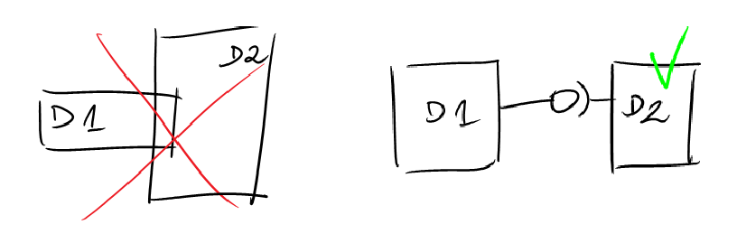
Kiedy stosować?
Domena jest złożona (nie wszystkie domeny mają charakter obiektowy)
Zespół jest doświadczony w projektowaniu obiektowym
Eksperci domenowi są stale dostępni
Proces wytwarzania oprogramowania jest iteracyjny
Warstwy DDD (1)
Warstwa prezentacji
Prezentowanie danych użytkownikowi
Odbieranie poleceń od użytkownika
Warstwa aplikacji
Przekierowuje komendy użytkownika do Warstwy domeny
Nie wykonuje przetwarzania biznesowego
Warstwy DDD (2)
Warstwa domeny
Implementuje przetwarzanie biznesowe
Warstwa infrastruktury
Zawiera rozwiązania technologiczne takie jak: utrwalanie danych, szyny komunikacyjne itp.
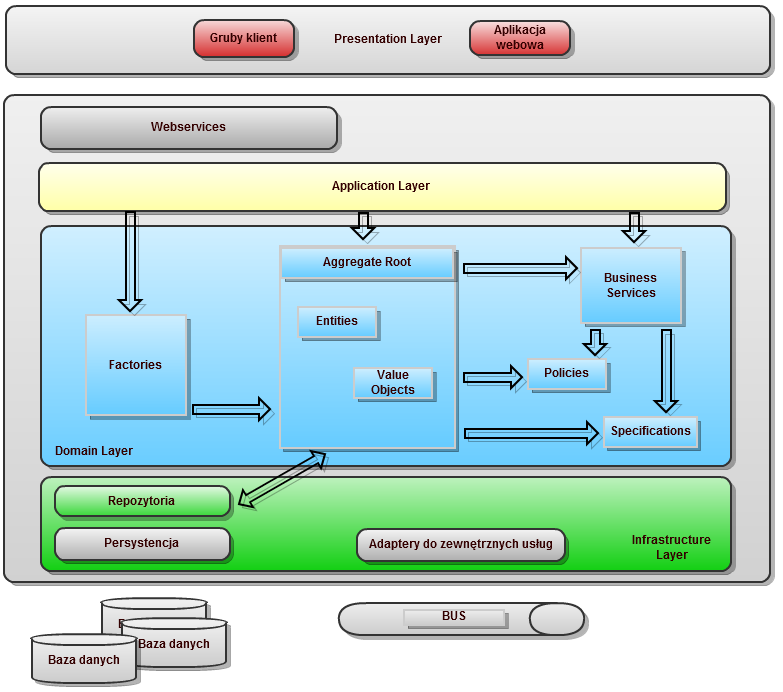
Spis treści
Po co Domain Driven Design?
Strategiczny rozwój systemu (ang. strategic design)
Ubiquitous language – komunikacja między programistami i ekspertami dziedzinowymi
Proces i potencjalne problemy
System informatyzuje pewien zakres domeny
W modelu dziedziny pojawia się wiele obiektów powiązanych ze sobą różnymi relacjami i wchodzącymi w różne interakcje
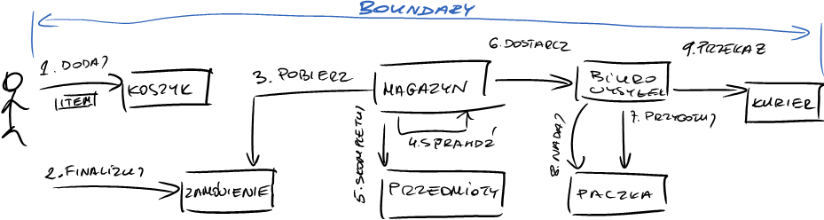
Proces i potencjalne problemy
Głównym problemem, który stara się rozwiązać DDD, to szybka odpowiedź architektury systemu na zmieniające reguły biznesowe
Przy rozbudowanym modelu może być to trudne do osiągnięcia
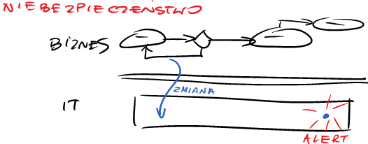
Bounded Context
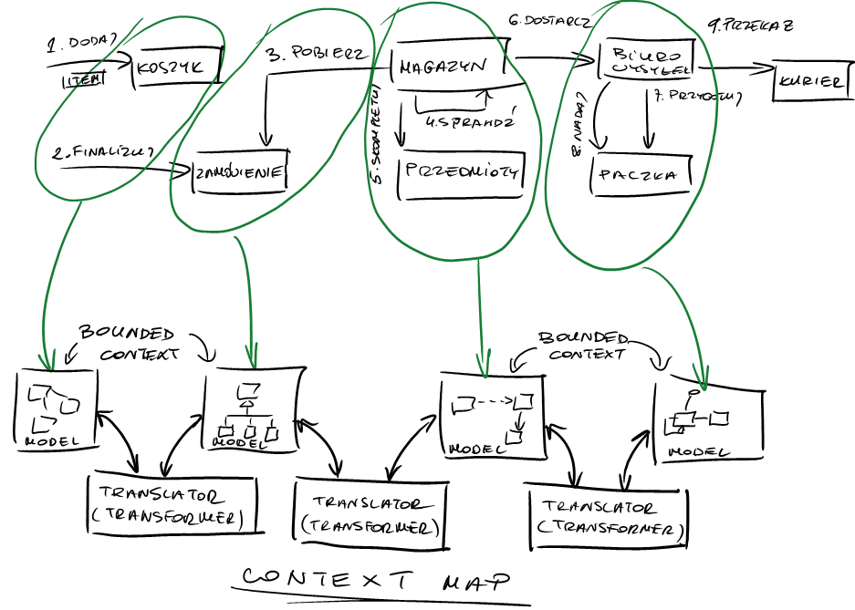
Bounded Context
Bounded contexts should have a name so that you can talk about them.
— Eric Evans
Bounded Context
Bounded Context nie oznacza enkapsulacji kodu lecz wyodrębnienie pewnego zagadnienia w płaszczyznach:
Architektonicznej
Organizacyjnej
Słownikowej
Mentalnej
Relacje między kontekstami
Wyodrębnienie kontekstów pozwala dostrzec relację między nimi
Poszczególne relacje dają wskazówki dotyczące organizacji pracy nad systemem
Rodzaje relacji
Continuous Integration
Shared Kernel
Customer / Supplier
Conformist
Anti-corruption Layer
Separate Ways
Open Host Service
Continuous Integration
Utrzymuj model i zespół w skupieniu
Kiedy stosować?
Zespół jest mały (do pięciu osób) i dziedzina (system) nie są zbyt rozległe
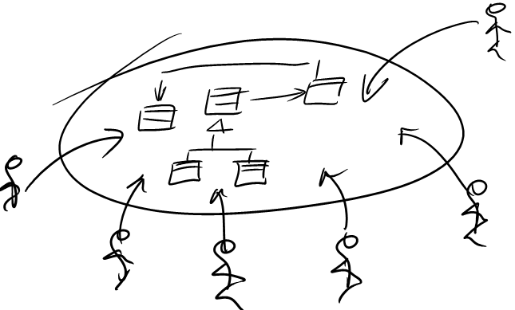
Continuous Integration
Praktyki
Posadź ludzi w jednym pomieszczeniu
Organizuj warsztaty projektowania
Upowszechniaj wspólny język
Dbaj, aby programiści mieli wiedzę domenową
Inicjuj spotkania programistów z ekspertami dziedzinowymi
Shared Kernel
Zmiana w jądrze wymaga zgody wszystkich współdzielących

Customer / Supplier
Kiedy stosować?
Między zespołami występuje relacja klient-dostawca
Zespoły podlegają jednemu menedżerowi
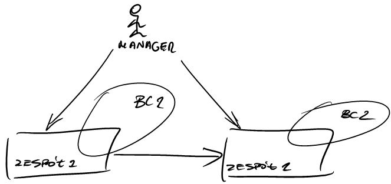
Customer / Supplier
Przykłady
Dostawca
Dostarcza usługi, zlecenia (np.
Zamówienia)
Klient
Definiuje testy akceptacyjne, jest dostępny (np.
Hurtownia danych)
Praktyki
Przeniesienie relacji klient-usługodawca na dwa zespoły programistyczne
Wspólne planowanie prac, definiowanie wymagań
Conformist
Zespół customer całkowicie dopasowuje swoje działania do zespołu supplier
Kiedy stosować?
Zespoły są zarządzane przez menażerów mających różne cele
Zespoły są w innych lokacjach lub firmach
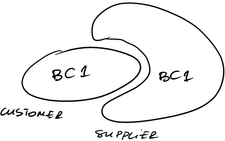
Conformist
Potencjalne problemy
Niedostępność zespołu supplier
Brak udokumentowanego API usług tworzonych przez zespół supplier
Zespół customer poświęca dużo czasu na poznawanie efektów prac zespołu supplier
Anti-corruption Layer
Model chroniony jest warstwą abstrakcji, która amortyzuje zewnętrzne zmiany
Kiedy stosować?
Gdy nie ma żadnego wpływu na zespół supplier
System korzysta z kodu legacy
System współpracuje z innymi systemami
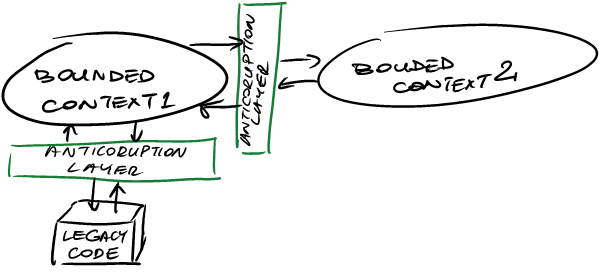
Anti-corruption Layer
Przykłady
Wysokopoziomowe API na urządzenia sieciowe
Odizolowanie kodu napisanego w C od nowego kodu tworzonego w C++
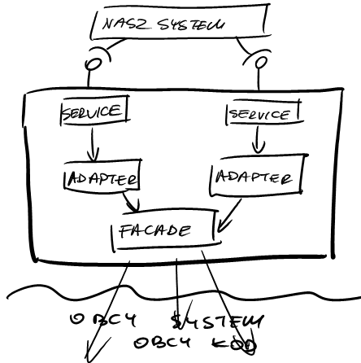
Separate Ways
To, że coś jest powiązane na poziomie przypadku użycia, nie oznacza, że musi być zintegrowane na poziomie architektury
— Eric Evans
Separate Ways
Kiedy stosować?
Integracja, współpraca, koordynacja między zespołami jest zbyt uciążliwa
Obiekty z kontekstów nie współpracują ze sobą
Dane nie są wspólne dla wielu kontekstów
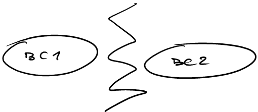
Separate Ways
Odseparowanie kontekstów oznacza również mentalne rozdzielnie zespołów
Zespoły
Przestają mówić tym samym językiem
Nie spotykają się na wspólnych warsztatach
Aby się ze sobą porozumieć muszą zaczynać od pojęć na większym poziomie abstrakcji i ogólności
Open Host Service
Dobrze zdefiniowane usługi udostępniają funkcjonalności systemu zewnętrznym klientom
Kiedy stosować?
System współpracuje z wieloma systemami
Utrzymywanie warstwy pośredniczącej jest zbyt kosztowne
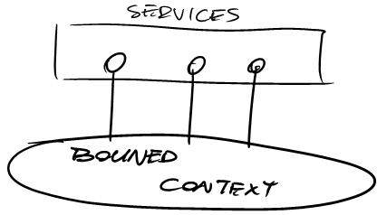
Spis treści
Po co Domain Driven Design?
Strategiczny rozwój systemu (ang. strategic design)
Ubiquitous language – komunikacja między programistami i ekspertami dziedzinowymi
Nim zaczniemy modelować
DDD adresuje problemy o złożonym modelu
platforma do publikowania blogów ma relatywnie prosty model (posty, komentarze, autorzy, targi, itd.)
DDD ma być platformą współpracy pomiędzy zespołem (którzy rozumieją jak) a ekspertami domenowymi (którzy rozumieją dlaczego)
Księgowi, finansiści, ekonomiści, nauczyciele
Jeżeli ekspert domenowy (osoba/osoby, które rozumieją domenę) posługują się innym żargonem niż zespół projektowy, to zachodzi potrzeba translacji (głuchy telefon)
Ubiquitous language
Wszędobylski język (albo wszechobecny język)
nazywanie obiektów pojęciami domenowymi
nazywanie metod akcjami / czynnościami domenowymi
praca w kontekście domeny
rozróżnienie obiektów z tożsamością i bez (encje, struktury danych)
Ubiquitous language
Nie musi być to UML - jeżeli nie przemawia on do Eksperta Domenowego
Dowolne symbole, wypracowana konwencja w obrębie zespołu - w tym Eksperta Domenowego
Szeregowi użytkownicy systemu myślą raczej historyjkami niż abstrakcyjnymi modelami
aby Ekspert Domenowy znał i rozumiał szanse oraz ograniczenia jakie niesie technologia
W projekcie powinien istnieć jeden, wspólny model domeny
Bez rozróżnienia na różne poziomy abstrakcji (model analityczny, projektowy, developerski)
Co mówi język?
public void addProduct(AggregateId orderId, AggregateId productId, int quantity) {
Reservation reservation = reservationRepository.load(orderId);
Product product = productRepository.load(productId);
if (! product.isAvailabe()){
Client client = loadClient();
product = suggestionService.suggestEquivalent(product, client);
}
reservation.add(product, quantity);
reservationRepository.save(reservation);
}Co mówi język?
Co dokładnie mówi nam model:
fakturę wystawiamy na podstawie całego zamówienia
nie ma możliwości wystawienia faktury na poszczególne pozycje
nie ma możliwości wystawienia faktury zbiorczej na kilka zamówień
możemy obliczać podatki dla dowolnego kraju, jest to domknięcie operacji issue, niezależne od adresu klienta na zamówieniu
Skutki uboczne
Jako że model jest dokładnie oddany w kodzie, system działa tak jak rozumie to Ekspert Domenowy
Ekspert rozumienie złożoności i kosztu zmian
Cały zespół świadomie zaciąga dług techniczny i ogranicza punkty swobody modelu
W powyższym przykładzie: nie możemy fakturować kilku zamówień ani poszczególnych pozycji
Kiedy brakuje języka?
Typowym symptomem sugerującym konieczność pochylenia się nad modelem są problemy w komunikacji
zespół developerski zaczyna używać pojęć niezrozumiałych dla Eksperta Domenowego, niemających uzasadnienia biznesowego
FakeOrder,TemporaryItemmodel staje zbyt złożony i wymaga "hackowania" błędnych koncepcji
zaczynamy obserwować "brodzenie" - czyli wyraźne spowolnienie prac, mierzone np. poprzez Scrum Velocity
złożoność rozwiązania zdaje się być niewspółmiernie większa niż odczuwana intuicyjnie złożoność samego problemu (Accidental vs Essential Complexity)
Proces budowy języka
Wraz z Ekspertem Domenowym tworzone są historyjki (opisy sekwencji biznesowych)
Budowany jest model oraz definiowane są zmiany stanu modelu
Tworzone są zręby kodu (serwisów) poprzez nagłówki klas, nazwy metod (walking skeleton)
Tak opracowane scenariusze formalizujemy - tworzymy wykonywalną dokumentację
Poprzez BDD (scenariusz akceptacyjne)
Struktura
Given(Ekspert) -When(Programista) -Then(Ekspert)
Microservices - zasady i praktyka
Spis treści
Smart endpoints and dumb pipes
Decentralizacja zarządzania
Decentralizacja danych
Automatyzacja infrastruktury
Czego nie uczą w szkołach? O czym należy pamiętać?
Smart endpoints
Usługa jest właścicielem swoich danych
Implementuje specyficzną logikę
Działa na zasadie Unix’owych potoków (pipes)
Przyjmuje żądania
Aplikuje logikę biznesową
Zwraca odpowiedź
Dump pipes
Serwisy komunikują się ze sobą na zasadzie stron WWW
HTTP request / response
Resource API (Hypermedia as the engine of application state)
Reverse DNS for service discovery
Brak dodatkowej logiki na poziomie protokołu
Jak WS-Choreography, BPEL albo centralna orchiestracja
Bez routingu, transformacji, reguł biznesowych
Be of the web, not behind the web
— Martin Fowler
Microservises a SOA
SOA ma wiele 'smaków'
Usługi
Repozytoria
Service discovery
Kontrakty (WSDLs)
Nie wszystkie są fatalne i zostały wypaczone przez lata, niektóre mają nadal zastosowanie w świecie µserviców
Microservices are SOA done right!
Wzorce EIP
Enterprise Integration Patterns, to kolekcja wzorców opisujących typowe problemy i ich rozwiązania, z jakimi się spotykamy podczas integracji aplikacji
Opisane zostały w książce "Enterprise Integration Patterns: Designing, Building, and Deploying Messaging Solutions" autorstwa Gregor Hohpe i Bobby Woolf
Opisane wzorce skupiają się na integracjach pomiędzy systemami w oparciu o asynchroniczne wiadomości i dzielą wzorce na kilka kategorii
Do naszej dyspozycji mamy jeszcze integracje oparte o:
współdzieloną bazę danych
RPC (Remote Procedure Call)
transfer plików
Wzorce EIP (2)
Wzorce EIP - jak wszystkie inne wzorce projektowe - proponują rozwiązania konkretnych problemów
Wzorce są pewną architekturą która sprawdza się w konkretnych kontekście
Wzorce opisują
kanały komunikacji, nośniki wiadomości
point-to-point, publish-subscribe, guaranted delivery, dead letter
techniki konstrukcji wiadomości
command, request-reply (reply-to), correlation identifier
techniki komunikacji z zewnętrznymi systemami
messaging gateway, service activator
Spis treści
Smart endpoints and dumb pipes
Decentralizacja zarządzania
Decentralizacja danych
Automatyzacja infrastruktury
Czego nie uczą w szkołach? O czym należy pamiętać?
Zarządzanie architekturą
Architecture Principles
Przykładowy zestaw reguł dla procesów integracyjnych
Szyna (defined broadly) nie może zawierać logiki aplikacyjnej
Proces komunikacji pomiędzy serwisami musi być spójny
Rozwój serwisów jest transparentny i dobrze zdefiniowany
Logi w obrębie systemu wykorzystywane są w celach statystycznych
SOAP do integracji z zewnętrznymi aplikacjami (contract-first), REST do integracji wewnętrznej
Principles (1)
Szyna (ESB) nie może zawierać logiki aplikacyjnej
Aplikacja zbiera wszystkie dane potrzebne do procesu integracji i dostarcza je jako pojedyncza wiadomość do szyny
Szyna pozostaje bierna, szyna nie inicjuje wysyłania jakichkolwiek wiadomości
Szyna nie implementuje reguł biznesowych, co za tym idzie w żaden sposób nie weryfikuje treści (semantyki) przetwarzanych wiadomości
Aplikacja jest odpowiedzialna za weryfikację że wiadomość jest poprawna (składniowo - syntaktycznie, jak i treściowo - semantycznie)
Aplikacja jest odpowiedzialna za poprawne logowanie wysyłanych wiadomości (np. na wypadek ponownego przesłania danych)
Principles (2)
Proces komunikacji pomiędzy serwisami musi być spójny
Najsłabsze ogniwo determinuje sposób komunikacji
Jeżeli proces wymaga przetwarzania w czasie rzeczywistym (real-time), cały łańcuch komunikacyjny musi wykorzystywać synchroniczne mechanizmy transportowe
Jeżeli proces wymaga "gwarancji dostarczenia wiadomości", cały łańcuch komunikacyjny musi wykorzystywać adekwatne mechanizmy transportowe
Principles (3)
Rozwój serwisów jest transparentny i dobrze zdefiniowany
Obecne jak i wcześniejsze wersje serwisów muszą być wspierane. Starsze wersje mogą być usuwane w ustalonych okresach czasu (np. 6 miesięcy)
Szyna udostępnia osobne interfejsy dla poszczególnych wersji usługi, dzięki czemu nowy serwis pozostaje bez wpływu na poprzednie wersje.
Zmiany w istniejących serwisach nie może negatywnie wpływać na istniejących klientów
Principles (4)
Logi w obrębie systemu wykorzystywane są w celach statystycznych
Logi gromadzone w obrębie szyny są meta informacjami, na bazie których wiadomości mogą być śledzone w obrębie procesów
W przypadku wystąpienia jakichkolwiek błędów w procesie, adekwatna reakcja jest odpowiedzialnością poszczególnych aplikacji
Principles (5)
SOAP do integracji z zewnętrznymi aplikacjami (contract-first)
Komunikacja z zewnętrznymi partnerami (vendorami) wymaga ściśle określonego kontraktu
Nie mamy wpływu na to w jaki sposób zewnętrzne zespoły realizują (implementują, konsumują) serwisy
Specyfikacje SOAP / WSDL / XSD umożliwiają adekwatne opisanie serwisu udostępnianego (konsumowanego) przez organizację
Ograniczone są w ten sposób potencjalne błędy semantyczne i syntaktyczne w komunikacji pomiędzy różnymi partnerami
Principles (6)
REST do integracji wewnętrznej
Do komunikacji wewnątrz aplikacji (organizacji) wystarczające jest podejście RESTful
Unikamy nadmiarowego i skomplikowane standardu SOAP do serwisów które mają był łatwe do używania i tworzenia; które działają pomiędzy różnymi elementami wewnątrz systemu
Dla serwisów RESTowych oczekiwane jest wykorzystanie HATEOAS ("Hypermedia as the engine of application state") - ułatwiających stworzenie dobrego systemu wersjonowania usług, definicji przesyłanych struktur danych oraz powiązań pomiędzy zasobami.
Implementation principles
GIT for source control
JVM languages unless
MongoDB for non-relational storage
MySQL for relational storage
Services must follow a specific versioning scheme
Example principle
Services must follow a specific versioning scheme
Rationale
There are breaking and non-breaking changes when new functionality is added to a service. Each REST service should follow a specific versioning scheme, to make sure consumers know when they need to upgrade and what the effect on consumer code is.
Implications
WSDLs and schemas must be set up in such a way that they can be easily versioned. This means that we have to make sure the namespaces used reflect the correct version of a service or message.
REST services will also have to be versioned. This means that in their content-type description a version number must be present.
Consumer driven contracts
Jako że niczego nie możemy być pewni - problemy trzeba znajdywać wcześniej niż na produkcji
Consumer zawiera oczekiwania wobec providera w formie kontaktu
Kontrakt jest oddzielnym dokumentem, oddzielnie wersjonowanym
Kontrakty są współdzielone z providerem
Daje to wgląd dostawcy jakie są oczekiwania wobec niego
Provider może automatycznie testować czy wprowadzane zmiany nie naruszają kontraktów
Consumer może weryfikować niezmienność kontraktu na wcześniejszych etapach
Spis treści
Smart endpoints and dumb pipes
Decentralizacja zarządzania
Decentralizacja danych
Automatyzacja infrastruktury
Czego nie uczą w szkołach? O czym należy pamiętać?
Decentralizacja danych
Te same koncepcją mają różne znaczenie w rożnych obszarach
To pewna oczywistość dla praktyków DDD
Jeżeli chcesz się pozbyć architekta na kilka lat poproś go o kanoniczne zdefiniowanie klienta dla np. ubezpieczeń
Każda usługa jest właścicielem własnych danych: zarówno struktury jak i sposobów fizycznego przechowywania danych
Wybór silnika danych (sposobu persystencji) w zależności od potrzeb projektowych
Bazy relacyjne, dokumentowe, multi-tenance, grafowe
Każdy wybór (decyzja) musi być bezwzględnie udokumentowana
Aby uniknąć sytuacji: użyliśmy Neo4j bo to fajny wpis w CV
Decentralizacja danych

Konsekwencje
Lack of data consistency
Nie ma możliwości przeprowadzenia spójnej aktualizacji po kilku bazach danych
Nie istnieje two-phase commit
Eventual consistency
Jak zarządzać potencjalnym brakiem spójności danych
Reguły biznesowe dla błędów i pomyłek (jak w liniach lotnicznych)
Koszt poprawek jest z reguły niższy niż implementacja spójne systemu
Problemem są systemy księgowe i finansowe
Spis treści
Smart endpoints and dumb pipes
Decentralizacja zarządzania
Decentralizacja danych
Automatyzacja infrastruktury
Czego nie uczą w szkołach? O czym należy pamiętać?
Build pipeline

W jaki sposób zapewnić aby każdy z powyższych testów był przeprowadzany na środowisku odzwierciedlającym produkcję?
Jak to wykonać w "klasycznym środowisku"
People per server ratio; avarage IT: 1 per 200 - 500 machines
Facebook: 1 per 25000 - Source
DevOps approach
Problemy
time gap - wdrażaj rzadko (co pół roku)
Jako że lepiej trudne rzeczy robić rzadko
personal gap - różni ludzie robią różne rzeczy
tools gap - diametralnie inne stosy technologiczne pomiędzy dev i ops (Nginx, SQLite, and OS X / Apache, MySQL, and Linux)
Zasady
Jenkins do wszystkiego
Nigdy nie patrz wstecz - wdrożenia tylko w przód
Nie tykamy serwerów - no ssh
DevOps approach
Spis treści
Smart endpoints and dumb pipes
Decentralizacja zarządzania
Decentralizacja danych
Automatyzacja infrastruktury
Czego nie uczą w szkołach? O czym należy pamiętać?
Problemy z monolitem
Trudne w rozwoju i utrzymaniu (long term technology stack commitment)
Nawet jeżeli podzielone na warstwy - wciąż występują wewnętrzne, niewidoczne sprzęgnięcia
Nowe sprzęgnięcia pojawiają się bardzo łatwo, w sposób niekontrolowany
Pojedynczy proces (w systemie) umożliwia odwołania poza "kontraktem"
Trudne w testowaniu i wdrażaniu (wiele zależności, atomic releases and rollbacks)
Trudny w skalowaniu (trzeba skalować całość podczas gdy od jednej usługi oczekiwana jest lepsza wydajność)
FUD: jeżeli działa - nie dotykać, nie naprawiać
Ładne diagramy rzadko kiedy przekładają się na ładny kod
Problemy z monolitem - refaktoryzacja
micro-based approach
If it works don’t fix it - as if you meant it
New features == new services. Architecture evolution
micro-based tools
Build and deployment automation
External configuration (configuration server)
Circuit breakings (retry policies, timeouts, default values)
Centralized logs and monitoring
Consumer Driven Contracts
Events (CQRS approach)
Problemy z mikroserwisami
Równie trudno (jak w monolicie) ogarnąć całość rozwiązania
Ale całość nie jest konieczna to rozwijania tylko części aplikacji
Nowy model działalności (np. DevOps)
Nowy sposób lokalizowania problemów
Diagnoza gdzie problem wystąpił
W następnej kolejności analiza dlaczego i jak naprawiać
Potencjalne problemy wydajnościowe (latency)
Czy warto?
| Plusy | Minusy |
|---|---|
Każda jednostka jest maksymalnie prosta | Bardzo dużo autonomicznych jednostek |
Niezależne charakterystyki skalowania i wydajności | Network latencies |
Niezależność testowania i wdrożenia | Brak transakcji |
Selektywny tuning wydajności (cache, replikacja danych) | Cross-cutting concerns i trudny refaktoring |
| Wymaga bardziej skomplikowanych narzędzi i zarządzania zależnościami |
Jak dekomponować mikroserwisy?
Jak duża powinna być mikro usługa
Should do one thing, should do it well and should do it only
Miara ilościowa: 1000 LoC
Miara jakościowa: Single Responsibility Principle (small enough and no smaller)
Miara jakościowa: bounds a single contex
Jak integrować mikroserwisy?
Izolowanie błędów - bulkheading
Niezależnść usług - serwis "obiecuje" działać w zakresie zdefiniowanym przez kontrakt / API
Nie współdzielenie stanu
Asynchroniczna komunikacja oparta o zdarzenia
Location transparency
Nie trzeba "brać wszystkiego"
Microserwisy to nie jest take it or leave it
Możemy stosować niektóre koncepcje, dopasowując je do naszego środowiska
Wykorzystanie zasad mikro usług do pracy z legacy
Koncepcja mikro usług i niezależnych komponentów przy frontend components
Consumer-driven contracts pomiędzy elementami interfejsu
Prawie µserwis
Każdy serwis w niezależnym procesie.
Jeżeli potrzeba, a może w osobnym classloaderze
Wdrażane niezależnie
Ale monolit jest łatwiej przenieść na produkcję
Obrazy Docker’a to przecież monolity
Komunikacja po HTTP
A może kolejki? EventBus? Pub / publish-subscribe
Coś pomiędzy?
- Self-Contained Systems (SCS)
Modelowanie serwisów wokół Sagi (z DDD) - long standing transactions
SCS jest kompletną i autonomiczną aplikacją webową (full stack): domena, dane i procesy (logika) do przetwarzania danych
Komunikacja z innymi serwisami jest asynchroniczna
SCS nie współdzieli kodu z innymi systemami (duplication over coupling)
Analogiczne praktyki jak w obszarze mikrousług:
Lokalna decyzyjność
Izolacja
Skalowalność i zastępowalność (replaceability)
Wzorce, przykłady rozwiązania?
Failure isolation - bulkheading
Autonomous services - service promises its own behaviour by publishing its protocol/API
Single responsibility - encapsulate a single concept
State ownership
Asynchronous, message based communication
Location transparency
RESTafarianizm
Orientacja na zasoby
Podejście REST (Representational State Transfer) - rok 2000
tradycyjne techniki i metody HTTP (GET, POST, PUT, DELETE) są w zupełności wystarczające
lekkie podejście nie wymagające specjalnych implementacji po stronie klienta
unikalny URL reprezentuje komponent usług sieciowych a nie konkretną usługę
bezpośrednia dostępność usług ułatwia ich integrację
REST
- Bazując na protokole HTTP, REST zakłada
Komunikację klient - serwer
SOAP można było wykorzystywać także przy innych protokołach komunikacyjnych
Brak stanu (bezstanwość) serwera
Cache
Jednolity interfejs
Jednoznaczna identyfikacja zasobu (poprzez URI)
Manipulacja zasobami poprzez ich reprezentację
Samoopisujące się wiadomości
REST (2)
Komunikacja następuje w oparciu o metody HTTP
GET, POST, PUT, DELETE
Informacja zwrotna to status HTTP
200 OK, 201 Created, 204 No Content, 400 Bad Request, 404 Not Found
Dodatkowe (meta) informacje poprzez nagłówki
Accept: application/json; charset=utf-8
Accept-encoding: gzip
Content-type: application/json; charset=utf-8
REST (3)
Zasady RESTa mogą prowadzić do ograniczeń
Podział klient-serwer
Bezstanowość serwera
Cache
Jednolity interfejs
Identyfikacja zasobów
Manipulacja zasobami przez reprezentacje
Samoopisujące się wiadomości
HATEOAS
Podział na warstwy
REST (4)
| Data Element | Modern Web Examples |
|---|---|
resource | the intended conceptual target of a hypertext reference |
resource identifier | URL, URN |
representation | HTML document, JPEG image |
representation metadata | media type, last-modified time |
resource metadata | source link, alternates, vary |
control data | if-modified-since, cache-control |
Integracja systemów to także API
- Zasady projektowania API nadal pozostają "w cenie"
Klientami twojego API są programiści
Pomimo tego że API działa z wykorzystaniem HTTP - nadal musi być czytelne
zwłaszcza w wypadku błędów
Wykorzystuj standardy
Zachowuj kompatybilność wsteczną i zaplanuj długie cykle życia wersji
Planuj strukturę reprezentacji zasobów
Richardson Maturity Model
Model dojrzałości API webowego
Na podstawie analizy istniejących interfejsów
Wykonany przez Leonard Richardson w 2008 roku
Definiuje 4 poziomy dojrzałości
Level 0 - pojedynczy URL, jedna metoda HTTP
Głównie serwisy SOAP XML (jak strona we Flashu)
Level 1 - wiele adresów URL - wszystkie wykorzystujące jedną metodę HTTP
Level 2 - wiele adresów URL wykorzystujących metody HTTP
Level 3 - zasoby deklarują zależności i połączenia (linki)
Level 0
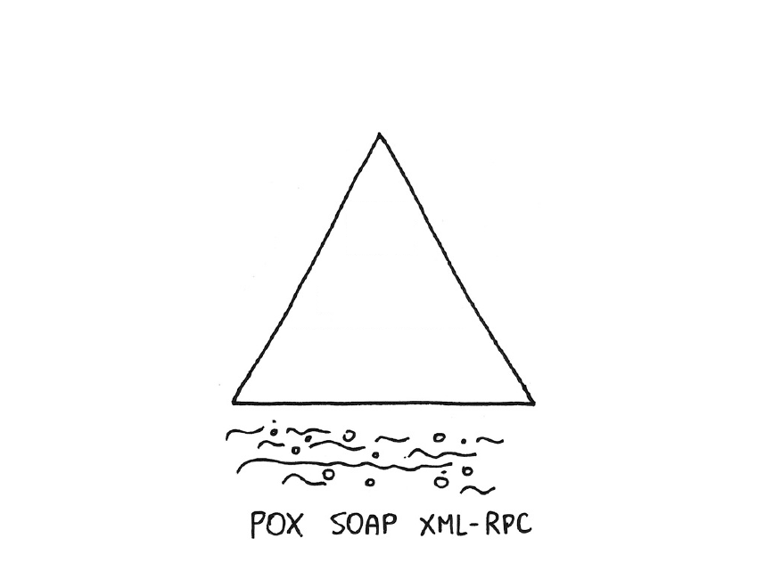
Level 0 - request
POST /auctionServiceAPIEndpoint HTTP/1.1<query>
<params>
<name>Macbook Air</name>
<price_from>0</price_from>
<price_to>1000</price_to>
</params>
</query>Level 0 - response
HTTP/1.1 200 OK<items>
<item>
<id>123</id>
<name>Macbook Air</name>
<price>499</price>
<condition>NEW</condition>
</item>
</items>Level 0 - request
POST /appointmentService HTTP/1.1<appointmentRequest>
<slot doctor = "mjones" start = "1400" end = "1450"/>
<patient id = "jsmith"/>
</appointmentRequest>Level 0 - request
POST http://svcs.ebay.com/services/search/FindingService/v1<findItemsByKeywordsRequest xmlns="http://www.ebay.com/marketplace/search/v1/services">
<affiliate>
<networkId>9</networkId>
<trackingId>1234567890</trackingId>
<customId>k-man</customId>
</affiliate>
<sortOrder>EndTime</sortOrder>
<paginationInput>
<entriesPerPage>2</entriesPerPage>
</paginationInput>
<keywords>camalots</keywords>
</findItemsByKeywordsRequest>Level 1
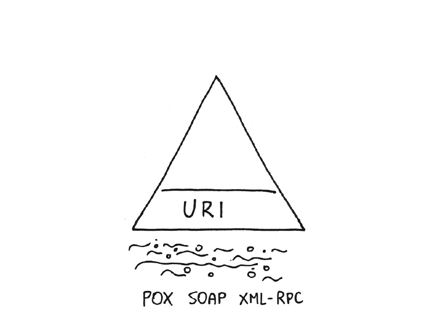
Level 1 - URIs
POST /slots/1234/create HTTP/1.1 (1)| 1 | Akcja w URL |
<appointmentRequest>
<patient id = "jsmith"/>
</appointmentRequest>Level 2
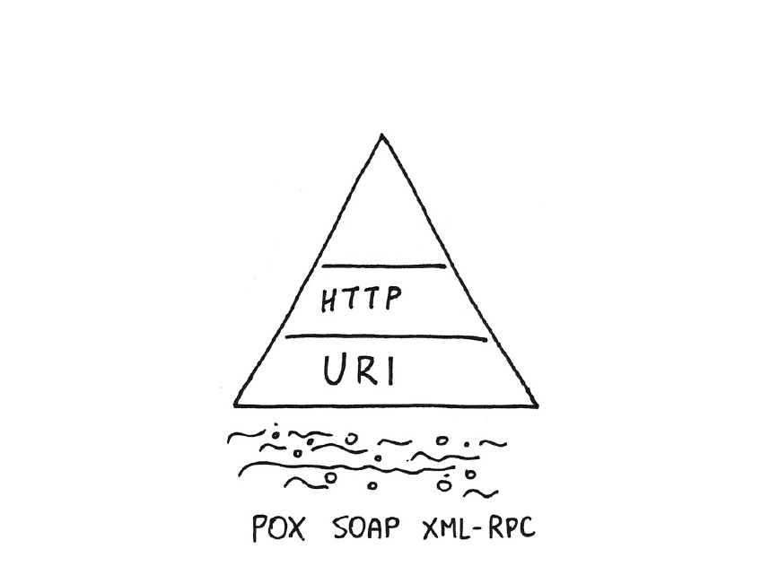
Level 2 - HTTP
Request
GET /doctors/mjones/slots?date=20100104&status=open HTTP/1.1
Host: royalhope.nhs.ukResponse
HTTP/1.1 200 OK (1)| 1 | Poprawne kody odpowiedzi HTTP |
<openSlotList>
<slot id = "1234” start = "1400" end = "1450"/>
<slot id = "5678” start = "1600" end = "1650"/>
</openSlotList>Level 2 - metody HTTP
GET (Safe and Idempotent)
GET /auctions→
HTTP/1.1 200 OK
GET /auctions/1234GET /auctions?search=Macbook+Air
DELETE (Not safe and Idempotent)
DELETE /auctions/1234→
HTTP/1.1 204 No Content
Level 2 - metody HTTP
Request
{
"name" : "Macbook Air 2010",
"condition" : "NEW",
"price" : 499
}POST (Not safe and not Idempotent)
POST /items→
HTTP/1.1 201 Created
Location: http://api.example.com/items/1235Serwer nadaje identyfikator
Level 2 - metody HTTP
Request
{
"name" : "Macbook Air 2010",
"condition" : "LIKE_NEW",
"price" : 498
}PUT (Not safe and Idempotent)
PUT /items/1235PUT /users/joe→
HTTP/1.1 204 No ContentKlient przekazuje identyfikator
Level 2 - metody HTTP
| | /users | /users/456 |
|---|---|---|
| Get All | Get a user |
| New user | — |
| — | Update |
| Delete All | Delete a user |
Level 2 - http responses
2xx: here you go3xx: go away4xx: you fucked up5xx: I fucked up
Level 2 - http responses
- Success
200 OK
201 CREATED
202 ACCEPTED
204 NO CONTENT
- Redirect
301 MOVED PERMANENTLY
303 SEE OTHER
304 NOT MODIFIED
307 TEMPORARY REDIRECT
Level 2 - http responses
- User error
400 BAD REQUEST
401 UNAUTHORIZED
403 FORBIDDEN
404 NOT FOUND
405 METHOD NOT ALLOWED
410 GONE
- Server error
500 INTERNAL SERVER ERROR
503 SERVICE UNAVAILABLE
Level 2 - http responses
Kody błędu są dla błędów
Request
http://api.flickr.com/services/rest?
method=flickr.photos.people.add
&api_key=xxx&photo_id=yyy&user_id=zzzResponse
HTTP/200 OK<?xml version="1.0" encoding="utf-8" ?>
<rsp stat="fail">
<err code="100" msg="Invalid API Key (Key has invalid format)" />
</rsp>Level 2
Kiedy jest to wystarczające?
Małe API
CRUD
Brak wyraźnego flow (procesu) w obrębie aplikacji
Level 3
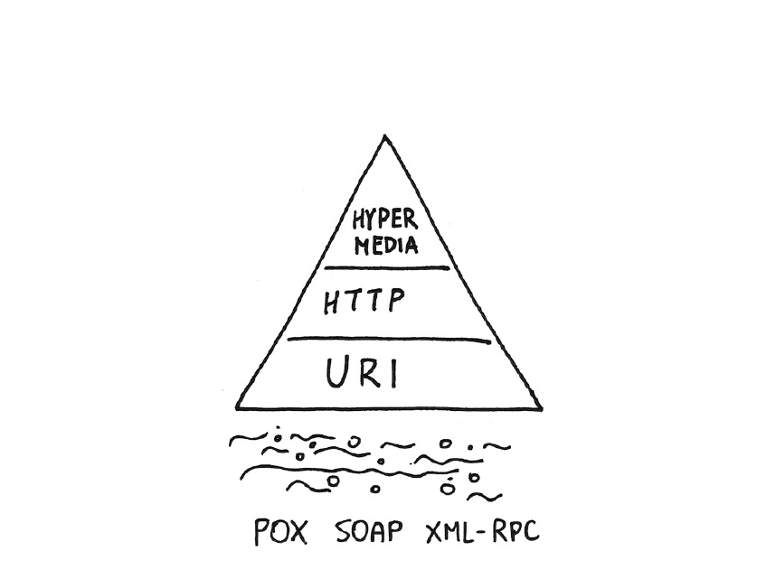
Level 3
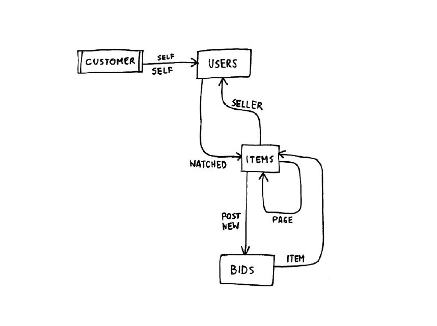
Level 3
Zalety
Sterowanie przepływem danych w aplikacji
Sterowanie dostępnymi podzasobami
Luźniejsze związanie serwera i klienta
Dodatkowa dokumentacja API (jednak niewystarczająca)
Wady
Więcej pracy
Więcej transferu
Tworzenie API dla nieistniejącego klienta
Brak wyraźnego standardu (JSON API)
Level 3 - response
<appointment>
<slot id = "1234" doctor = "mjones" start = "1400" end = "1450"/>
<patient id = "jsmith"/>
<link rel = "/linkrels/appointment/addTest"
uri = "/slots/1234/appointment/tests"/>
<link rel = "/linkrels/appointment/updateContactInfo"
uri = "/patients/jsmith/contactInfo"/>
</appointment>Level 3 - response
Hypertext Application Language
{
"name": "Luke Skywalker",
"height": "1.72 m",
"mass": "77 Kg",
"hair_color": "Blond",
"_links": {
"self": {
"href": "http://swapi.co/api/people/1/",
"title": "Luke Skywalker"
},
"http://swapi.co/api/rels/species": {
"href": "http://swapi.co/api/species/1/",
"title": "Human"
}
}
}Wersjonowanie
Czy URL jest elementem kontraktu? Czy bookmarkujemy, zapisujemy adresy URL?
A REST API should be entered with no prior knowledge beyond the initial URI (bookmark) and set of standardized media types that are appropriate for the intended audience. Failure here implies that out-of-band information is driving interaction instead of hypertext.
REST APIs must be hypertext-driven (2008)
— Roy T. Fielding
— Roy T. Fielding
Wersjonowanie (2)
Czy informacja o MediaType jest konieczna aby skonsumować usługę?
A REST API should spend almost all of its descriptive effort in defining the media type(s) used for representing resources and driving application state, or in defining extended relation names and/or hypertext-enabled mark-up for existing standard media types.
REST APIs must be hypertext-driven (2008)
— Roy T. Fielding
— Roy T. Fielding
Wersjonowanie - 5 levels of media types
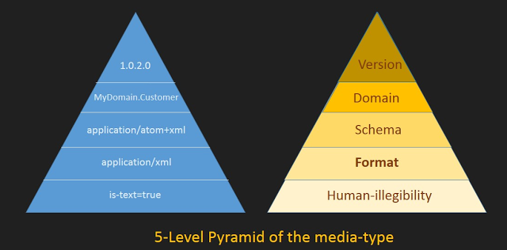
formatting:
application/xmlschema:
application/rss+xmldomain:
application/vnd.google-earth.kml+xmlvesioning:
application/vnd.mycompany.billing-v2.1+json
Wersjonowanie
Media-type, bezpośrednio poprzez nazwę
Request:
GET /opengov/garbageschedule?location=Main%20Street HTTP/1.1
Accept: application/vnd.opengov.org.garbageschedule-v2+json (1)
Response:
HTTP/1.1 200 OK
Content-Type: application/vnd.opengov.org.garbageschedule-v2+json
{
"schedule"
"self": "schedule-2423",
"dayOfWeek": "Monday",
"oddOrEvenWeeks": "Odd"
}| 1 | Najbardziej RESTful z RESTful; wiele różnych media-type do ślednienia |
Wersjonowanie (2)
Media-type, poprzez qualifier
Request:
GET /opengov/garbageschedule?location=Main%20Street HTTP/1.1
Accept: application/vnd.opengov.org.garbageschedule+json;v=1 (1)
Response:
HTTP/1.1 200 OK
Content-Type: application/vnd.opengov.org.garbageschedule+json;v=1
{
"schedule"
"self": "schedule-2423",
"dayOfWeek": "Monday",
"oddOrEvenWeeks": "Odd"
}| 1 | Qualifier wydaje się być łatwiejszy do implementacji. Parameters MAY follow the type/subtype in the form of attribute/value pairs (rfc2616 sec 3.7) |
Wersjonowanie (3)
@Produces("application/vnd.example.user.v1+json;q=0.9") (1)
public UserResponse findUserV1(@PathParam("userId") String userId) {
User user = userRepository.findOne(userId);
return userResponseFactory.successUserResponseV1(
getMessage("findById.success"), user);
}
@Produces({"application/json", "application/vnd.example.user.v2+json"})
public UserResponse findUserV2(@PathParam("userId") String userId) {
User user = userRepository.findOne(userId);
return userResponseFactory.successUserResponseV2(
getMessage("findById.success"), user);
}| 1 | Parametr q obniża wartość parametruHTTP content negotiation (section 12) uses short "floating point" numbers to indicate the relative importance ("weight") of various negotiable parameters (rfc2616 sec 3.9) |
Wersjonowanie (4)
Wersja dodawana jest do URLa (domeny)
Request:
GET /opengov/v1/garbageschedule?location=Main%20Street HTTP/1.1 (1)
GET /opengov/garbageschedule?version=1&location=Main%20Street HTTP/1.1 (2)
Accept: application/vnd.opengov.org.garbageschedule+json
Response:
HTTP/1.1 200 OK
Content-Type: application/vnd.opengov.org.garbageschedule+json
{
"schedule"
"self": "schedule-2423",
"dayOfWeek": "Monday",
"oddOrEvenWeeks": "Odd"
}Wersjonowanie (5)
GET /opengov/v1/garbageschedule?location=Main%20Street HTTP/1.1- Wersja w URL
+ Łatwe do testowania
- Ten sam zasób funkcjonuje pod wieloma adresami URL. Dodatkowe elementy URL które nie mają znaczenia patrząc z punktu widzenia zasad REST
- Wersja najbardziej aktualnego API nie jest jednoznaczna i bywa ciężka do odnalezienia (np. CKAN)
Wersjonowanie (6)
GET /opengov/garbageschedule?version=1&location=Main%20Street HTTP/1.1- Wersja w parametrach URL
+ Łatwe do testowania
+ Domyślna wersja (aktualna) - np. poprzez brak podania wersji
- Parametr
versionnie jest jednoznaczny i może być w konflikcie z atrybutami samego zasobu. Pomieszanie query parameters i control parameters
Wersjonowanie a infrastruktura
map $http_accept $api_backend {
default "localhost:8081";
"~application/vnd\.example-v1\+json" "localhost:8080"
"~application/vnd\.example-v2\+json" "localhost:8081"
}
proxy_pass http://$api_backend/$request_uriNie jest prawdą że konfiguracja na load balancerze jest możliwa tylko poprzez URL
Nginx pozwala na przekierowywanie wiadomości do odpowiedniego hosta w zależności od np. nagłówka
Accept
Złe URLe
• http://www.acme.com/product/
• http://www.acme.com/product/filter/cats/desc
• http://www.acme.com/product/1234
• http://www.acme.com/photos/product/1234
• http://www.acme.com/photos/product/1234/new (1)
• http://www.acme.com/photos/product/1234/5678 (2)| 1 | new what? |
| 2 | PhotoID? ProductID? |
Dobre URLe
• http://www.acme.com/products/ (1)
• http://www.acme.com/products/?filter=cats&sort=desc (2)
• http://www.acme.com/products/1234 (3)
• http://www.acme.com/products/1234/photos/ (4)
• http://www.acme.com/products/1234/photos/?sort=latest
• http://www.acme.com/products/1234/photos/5678| 1 | Lista produktów |
| 2 | Filtrowania |
| 3 | Pojedynczy produkt |
| 4 | Wszystkie zdjęcie |
Przykład z życia - Twitter API
Status Show
Problemy:
Akcja show jest elementem URLa
Lepiej: GET
http://twitter.com/statuses/12345z odpowiednim Accept header
Przykład z życia - Twitter API (2)
Status Update
Problemy:
Akcja update jest elementem URLa
Użytkownik jest implicite jako wynik uwierzytelnienia
Lepiej: POST
http://twitter.com/users/fabpot/statuses/
Przykład z życia - Twitter API (3)
Status destroy
Problemy:
Akcja destroy jest elementem URLa
Dziwna hierarchia, do czego odnosi się ID 12345?
Umożliwia zarówno akcję POST jak i DELETE
Lepiej: DELETE
http://twitter.com/statuses/12345
Przykład z życia - Twitter API (4)
Status retweets
Problemy:
Znowu dziwne hierarchia
Lepiej: GET
http://twitter.com/statuses/12345/retweets/
Przykład z życia - Twitter API (5)
Retweet
Problemy:
Akcja retweet jest elementem URLa
Umożliwia zarówno akcję POST jak i PUT
Lepiej: POST
http://twitter.com/statuses/12345/retweets/
Wzorce architektury mikrousługowej
Refaktoryzacja
Stan istniejący (architektura)
3-tiered application
Warstwa interfejsu użytkownika (GWT, JSF, Silverflight, Flash)
Warstwa uslug (komponentów biznesowych → logika aplikacji +
ManagedBean JSF, SOAP WebServices)Warstwa persystencji (baza danych)
Warstwa componentów integracyjnych (wejściowych i wyjściowych) (opcjonalnie)
Stan istniejący (problemy)
Powiązania (sprzężenia) pomiędzy elementami aplikacji (obszarami funkcjonalnymi) - skutkujące niemożliwym do utrzymanie kodem
Zależności pomiędzy elementami w kodzie skutkujące sprzężeniami w runtime - żądania blokują i czekają
Problemy ze skalowaniem systemu: im więcej system ma pracy, tym dłużej trwają zapytania, tym dużej blokowane są wątki
Blokowanie bazy danych że względu na operowanie w zakresie pojedynczej transakcji.
Nim zaczniemy refaktoryzację
Implementacja monitoringu na samym początku okazuje się być kluczowa, aby śledzić czy poszczególne serwisy podlegając zmianą nadal robią to co mają robić
- Implementacja monitoringu to dodatkowo
Analiza użycia: weryfikacja które elementy systemu używane są najintensywniej (dodatkowo, które są zmieniane - churn / Feather’s Quadrant) - możliwe że warto zacząć od tych elementów systemu
Analiza wydajności: które elementy systemu są wąskimi gardłami, które są zasobożerne - możliwe że to są potencjalni kandydaci do refaktoryzacji
Podejście od strony kodu
Migracja kodu
REST / JMS - pozostają bez zmian
REST jako zasoby dla aplikacji frontendowej
SOAP i EJB
Implementacja wzorca
Service Facadejest prosta do przełożenia na serwis asset-based (zmiana CRUDowych metod RPC na operacje na pojedynczych obiektach)Pewna doza kompatybilności JAXB i JSON może być pomocna
Servlet / JSP / JSF
Konwersja 'logiki' zawartej w serwletach, managed bean w kierunku obiektów domenowych DDD.
Migracja / nowe funkcjonalności

Jak zrobić glue code
Wywołanie zdalnych API dostarczonych przez legacy application
Bezpośrednie połączenie do istniejących danych
Przetrzymywanie i synchronizowanie własnej kopi danych
Eventual consistency / Event based integration
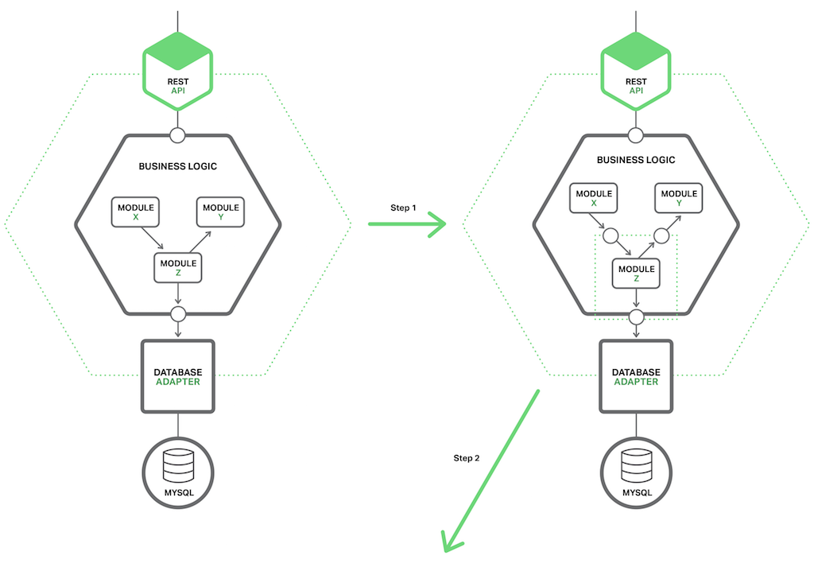
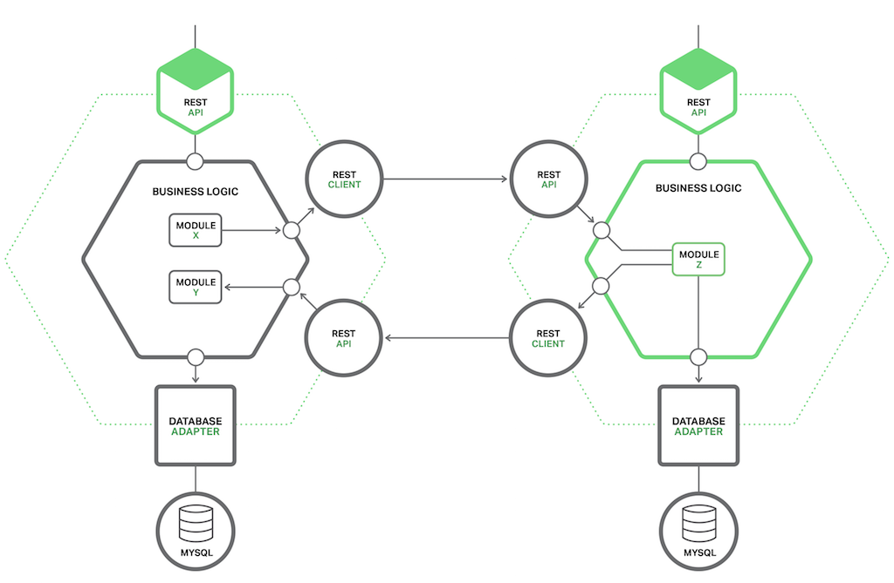
Gdy HTTP to za mało

Podejście od strony domeny
Jak przeprowadzić migrację (1)
Wraz z ekspertami domenowymi identyfikujemy kluczowe zdarzenia w obrębie systemu ("utworzenie klienta", "modyfikacja klienta", "rozpoczęcie procesu płatności", "zakończenie procesu płatności").
Aplikacja rozpoczyna rozgłaszanie wiadomości (zdarzeń), a wraz z każdą aktualizacją systemu dodajemy więcej zdarzeń - nawet jeżeli nie są obsługiwane przez pozostałe elementy systemu
Jak przeprowadzić migrację (2)
Nowe funkcjonalności (potencjalnie na obrzeżach systemu) mogą zacząć używać opublikowanych zdarzeń jako wyzwalaczy (triggerów).
Przykładowo: funkcjonalności eksportu, przeliczenia w tle wymagane np. do raportów, tworzenie nowy elementów (wydarzeń) to listy zadań, de-duplikacja danych na potrzeby wydajności.
Dzięki temu nowe moduły (funkcjonalności) mogą pojawiać się w systemie minimalizując konieczność ingerencji w istniejący kod.
Jak przeprowadzić migrację (3)
Wyzwaniem może być pozostawienie spójnego interfejsu użytkownika. Pomimo rozbicia systemu na niezależne elementy, oczekiwane jest że interfejs użytkownika pozostanie spójny.
Możliwe podejścia to:
Single Page Application (SPA) - monolit na poziomie warstwy UI
Komponenty UI (np. dyrektywy AngularJS, komponenty ReactJS) - przywiązanie do konkretnej technologii
Niezależne komponenty - każdy mikroserwis samodzielnie publikuje fragment UI (snippet)
Zalando Project Mosaic (https://www.mosaic9.org/)
Allegro OpBox
Jak przeprowadzić migrację (4)

Podejście od strony danych
Migracja danych
Flavours of data
Serializowane / binarne obiekty w kolumnach
Blob→ Key-value store
Płaskie struktury obiektów bez relacji (zdenormalizowane)
→ Dokumentowe struktury danych
Słowniki (dane referencyjne) przetrzymywane w pamięci (in-memory cache)
→ Key-value store
Skomplikowane zapytanie (wielopoziomowe, wielokrotne złączenia)
→ Może struktura danych jest drzewiasta / grafowa (Neo4j)
Nasz model relacyjny jest OK
Migracja struktur relacyjnych
Zero Downtime migrations
Back and Forward compatibility
Baby steps (Small batch sizes)
Avoid locks
Kiedyś
ALTER TABLE customers RENAME COLUMN wrong TO correct;Teraz
ALTER TABLE customers ADD COLUMN correct VARCHAR(20);
UPDATE customers SET correct = wrong WHERE id < 100;
UPDATE customers SET correct = wrong WHERE id < 200;
<code update>
<code update>
<code update>
(later...)ALTER TABLE customers DELETE COLUMN wrongZmiana nazwy kolumny / typu danych
Tworzenie nowej kolumny
Kod czyta ze starej kolumny, zapisuje do obu
Kopiujemy dane mały kawałkami
Kod czyta z nowej kolumny, zapisuje do obu
Kod czyta i zapisuje do nowej kolumny
Usuwamy starą kolumnę
Wyodrębnienie danych
- Widok
Najłatwiejszy i najpopularniejszy
Spójność kosztem problemów z wydajnością
Bazy muszą być dla siebie widoczne
- Widok zmaterializowany
- Klonowanie tabel poprzez triggery
Różny wsparcie w zależności o silnika bazy danych
Wyodrębnienie danych
- Klonowanie tabel poprzez zewnętrzne procesy ETL
Wiele różnych narzędzi
Wymaga zewnętrznego schedulera
Może operować na kilku bazach danych jednocześnie
- Event sourcing
Konwersja operacji bazodanowych na zdarzenia
Łatwa analiza danych
Brak silnej spójności danych